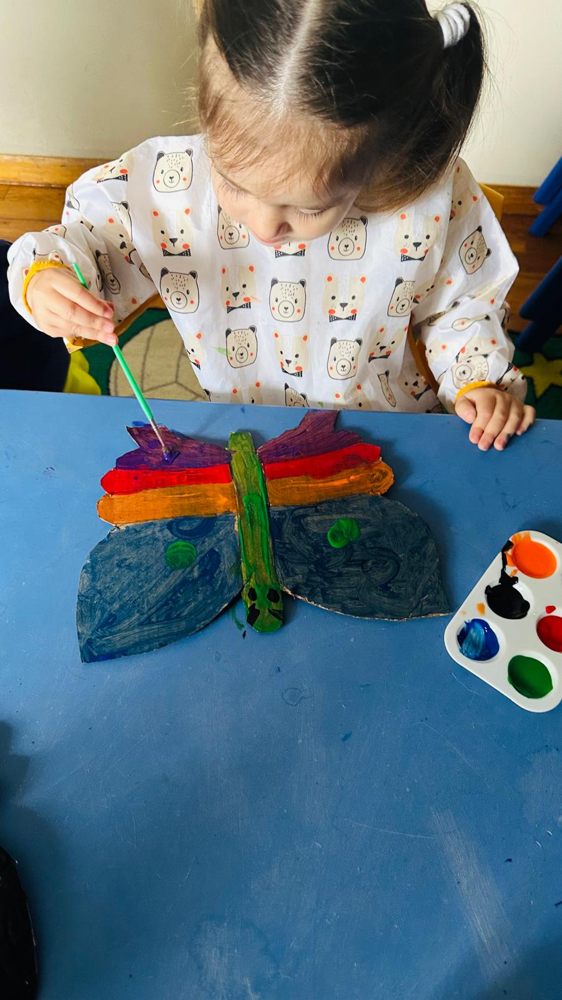
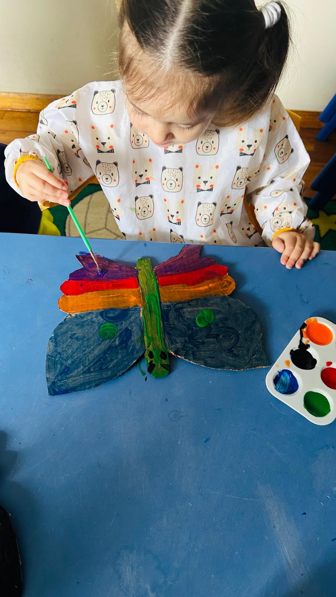
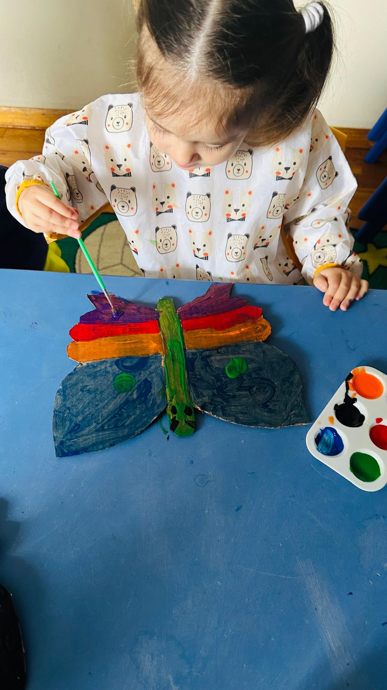
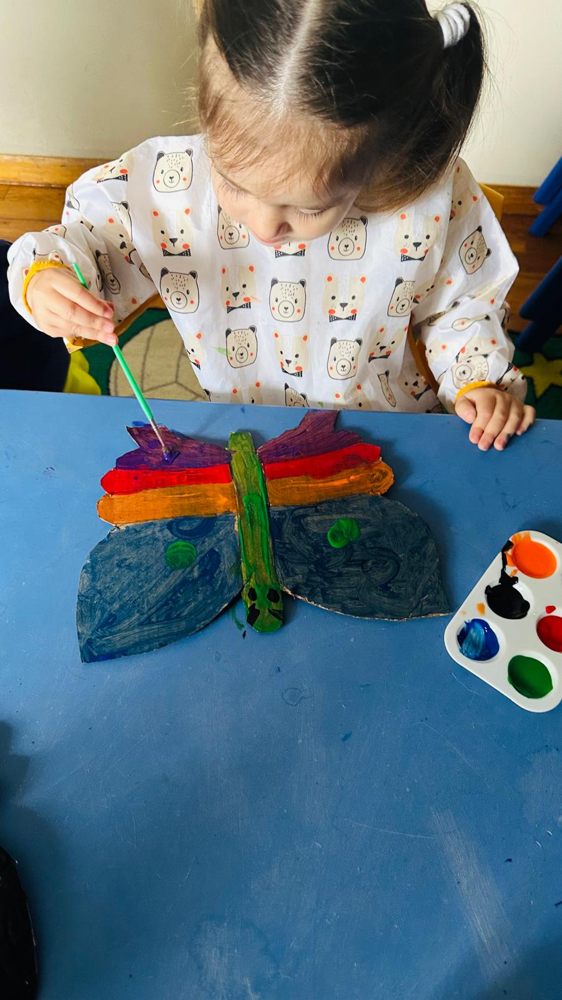

 

At Brighter Kids Daycare, we prioritize the comprehensive development of each child, focusing on intellectual, social, emotional, and physical growth through carefully crafted activities and interactions. Our curriculum
emphasizes laying strong educational foundations early on, introducing essential concepts in literacy, numeracy, and science in engaging ways to prepare children for academic success. We ensure a safe and supportive environment
where children feel comfortable to explore and learn, with secure facilities and trained staff. Recognizing the importance of parental involvement, we maintain open communication and organize regular meetings and events to involve parents in their child's learning journey. We celebrate diversity and promote cultural understanding, aiming to foster empathy, tolerance, and respect. Ultimately, our goal is to equip children with the skills, knowledge, and confidence needed for future success,nurturing a love for learning and critical thinking to empower them as lifelong learners. At Brighter Kids Daycare, every child is valued, respected, and encouraged to shine brightly!